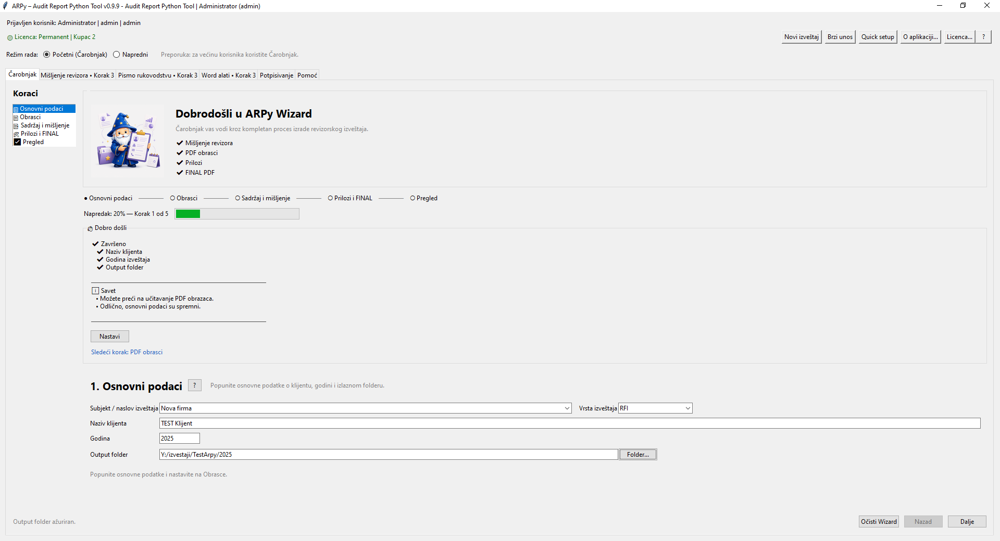
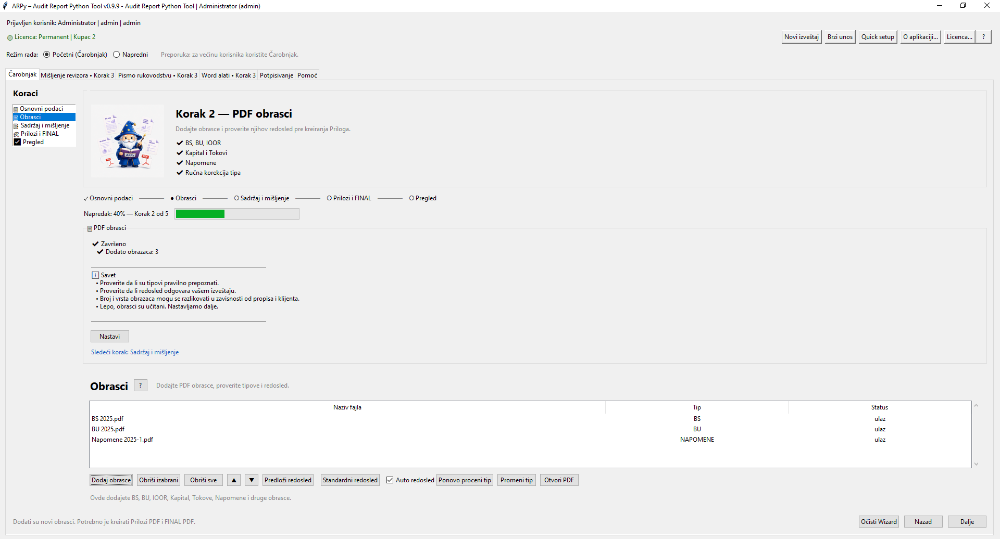
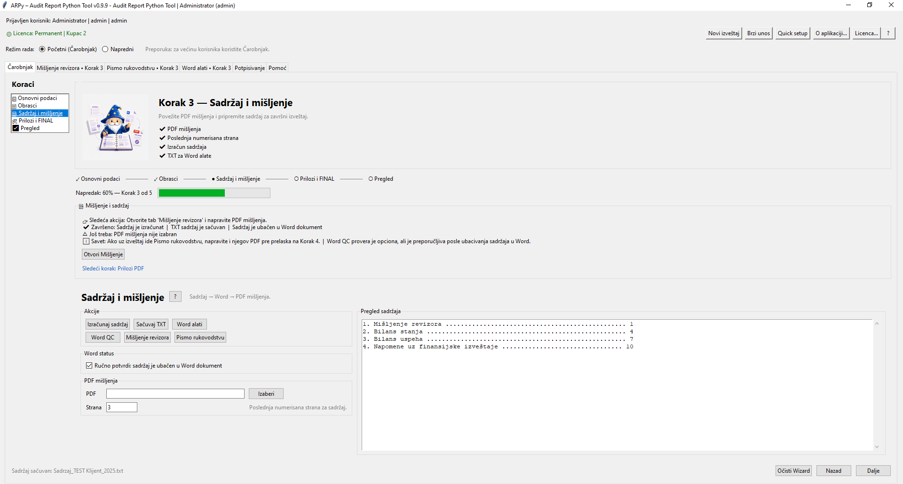
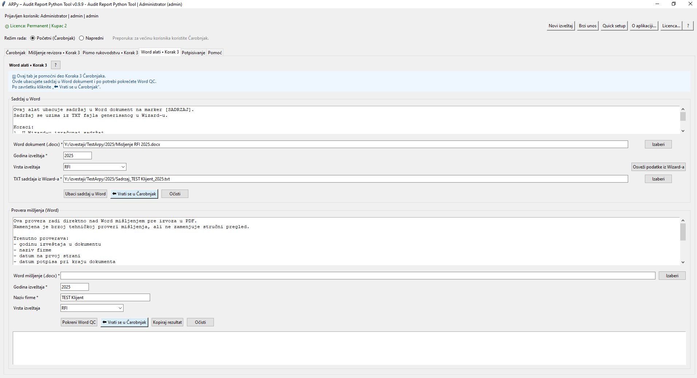
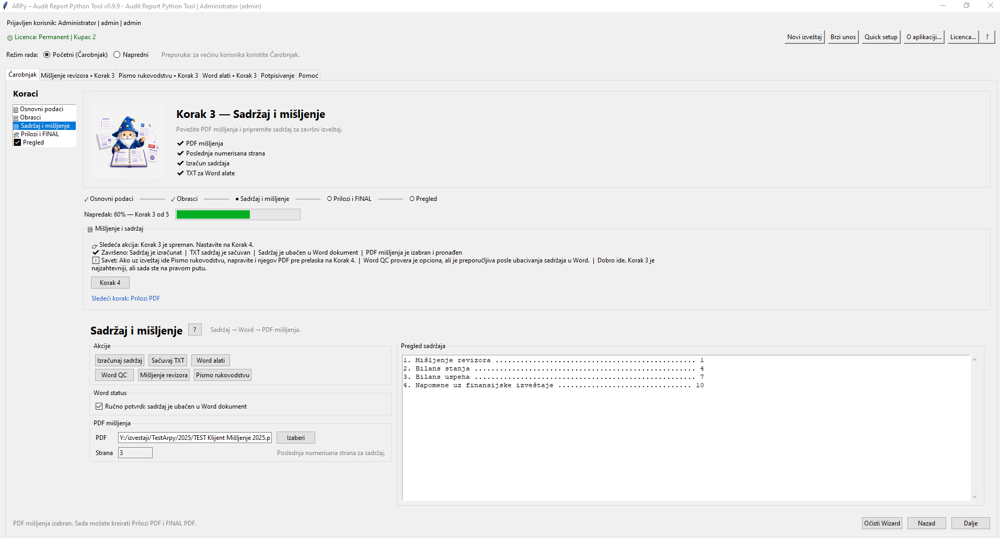
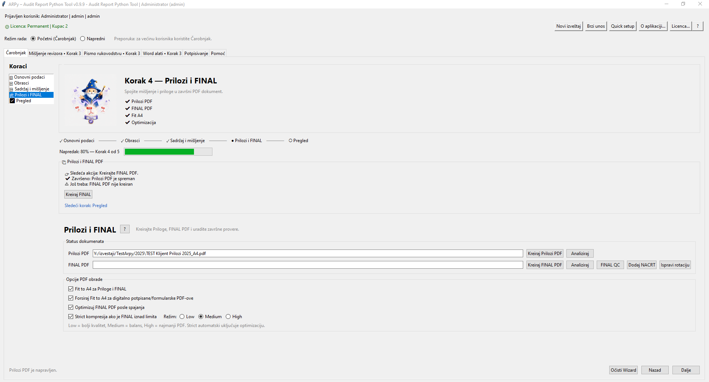
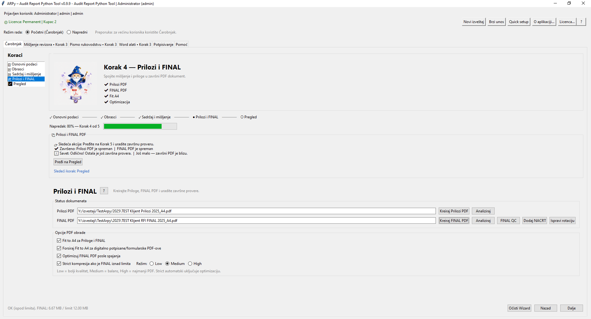
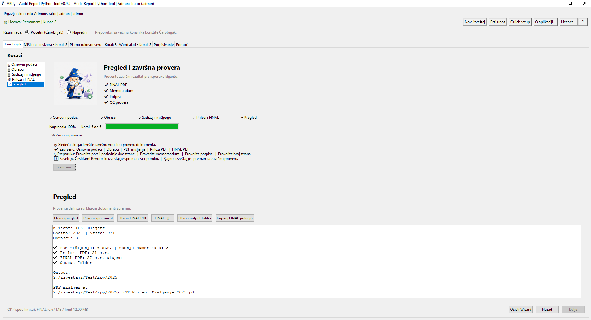
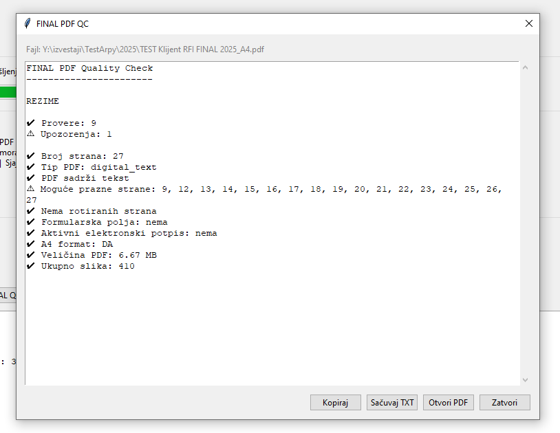
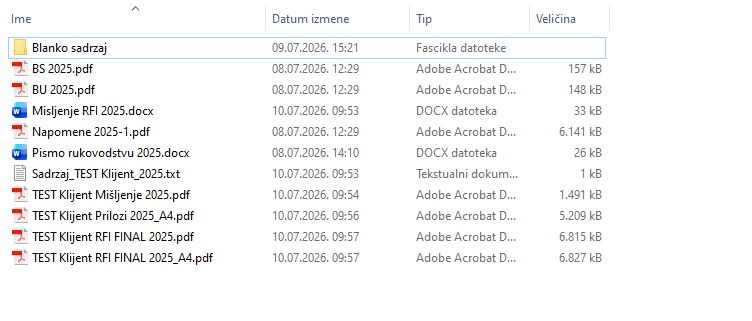

Čarobnjak je preporučeni način rada u ARPy aplikaciji. Korak po korak vodi korisnika kroz pripremu revizorskog izveštaja — od osnovnih podataka i izbora dokumenata do kreiranja FINAL PDF-a i završne kontrole kvaliteta.
Unose se osnovni podaci o izveštaju: subjekt, tip izveštaja, naziv klijenta, godina i output folder.
Output folder je mesto gde ARPy čuva generisane PDF i TXT fajlove.
Dodaju se PDF obrasci koji ulaze u priloge: bilans stanja, bilans uspeha, ostali rezultat, kapital, tokovi gotovine, napomene i drugi dokumenti.
Auto redosled može automatski sortirati obrasce po standardnom redosledu.
Povezuje se PDF mišljenja i izračunava tehnički sadržaj izveštaja. Korisnik može preći na tab Mišljenje revizora ili Word alate.
Sadržaj se ne računa dok nije uneta strana ili izabran PDF mišljenja, čime se smanjuje rizik od pogrešnog TOC-a.
Kreira se Prilozi PDF, zatim FINAL PDF izveštaj. ARPy proverava da PDF mišljenja i Prilozi PDF nisu isti fajl i kontroliše očekivan broj strana nakon spajanja.
Ove zaštite smanjuju rizik od dupliranja priloga ili pogrešno sastavljenog FINAL PDF-a.
Završni korak prikazuje spremnost izveštaja, broj strana, status PDF mišljenja, Prilozi PDF-a, FINAL PDF-a i output foldera.
Iz ovog koraka mogu se otvoriti FINAL PDF, output folder, FINAL QC i kopirati putanja finalnog fajla.
Vodič u Čarobnjaku sada nudi sledeću konkretnu akciju: izračun sadržaja, čuvanje TXT sadržaja, prelazak na Word alate, izbor PDF mišljenja ili kreiranje FINAL PDF-a.
Korisnik ne mora da pamti gde je sledeći korak — Čarobnjak predlaže akciju u kontekstu.
Korak 5 prikazuje status ključnih elemenata izveštaja i nudi brze komande za FINAL PDF, FINAL QC, output folder i kopiranje putanje.
Namenjeno kao poslednja kontrolna tačka pre slanja, štampe ili potpisivanja.
Automatski sortira obrasce prema očekivanom redosledu.
Korisno kada se dodaje više PDF obrazaca odjednom.
Pokušava da uskladi PDF strane sa A4 formatom.
Posebno korisno kod PDF dokumenata koji nisu pravilno formatirani.
Koristi jaču obradu kada standardni Fit A4 nije dovoljan.
Koristiti pažljivo, naročito kod digitalno potpisanih ili formularskih PDF dokumenata.
Dodatno smanjuje veličinu FINAL PDF-a kada je dokument prevelik.
Režimi Low, Medium i High podešavaju odnos veličine i čitljivosti.
Pokreće završnu proveru kompletnog FINAL PDF-a.
Proverava A4 format, broj strana, tekst, prazne strane, potpis, forme i veličinu.
Po podešavanju korisnika, pomoćni PDF fajlovi mogu se prebaciti u podfolder _arpy_temp.
Glavni output folder ostaje pregledan, a međukoraci ostaju sačuvani.
Primer ispod prikazuje kompletan tok kroz Čarobnjak u verziji 0.9.9: od unosa osnovnih podataka, preko obrazaca i sadržaja, do FINAL PDF-a, završnog pregleda i output foldera.
Screenshotovi su napravljeni na test izveštaju i služe kao praktičan vodič kroz najčešći način rada.

Korak 1 — unos osnovnih podataka, godine i output foldera.

Korak 2 — dodavanje finansijskih obrazaca i priloga.

Korak 3 — izračun tehničkog sadržaja izveštaja.

Word alati — ubacivanje sadržaja u Word dokument.

Korak 3 — povezivanje PDF mišljenja sa Čarobnjakom.

Korak 4 — kreiran Prilozi PDF.

Korak 4 — kreiran FINAL PDF sa kontrolom očekivanog broja strana.

Korak 5 — završni pregled spremnosti izveštaja.

FINAL PDF QC — završna tehnička provera dokumenta.

Output folder — generisani fajlovi i završni rezultat.
Word mišljenje
│
▼
Word QC
│
▼
PDF mišljenja
│
▼
Obrasci + Napomene + Prilozi
│
▼
Prilozi PDF
│
▼
FINAL PDF
│
▼
Završni pregled
│
▼
FINAL PDF QC
│
▼
Isporuka / štampa / potpisivanje